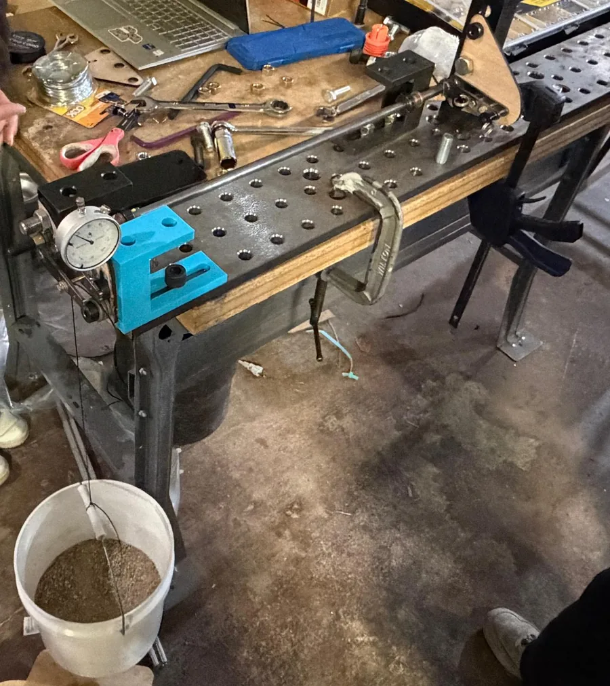

About me
Aarav Shah
I am a UCLA Mechanical Engineering student, Class of 2029.
At Bruin Formula Racing, I am the Anti-Roll Bar Responsible Engineer. I am also an undergraduate researcher at the UCLA Micro and Nano Manufacturing Laboratory, where I machine a shear sensor for nanostructure drag testing.
I am looking for a full-time internship for Summer 2027 in automotive, robotics, advanced manufacturing, or product development.
Interests
What I want to work on
-
Automotive engineering
Responsible engineer for the front and rear anti-roll bars on Bruin Formula Racing’s Mark 12. Designing to packaging, adjustability, and serviceability limits on a team-built car.
-
Mechanical design and product development
Designing parts in SolidWorks and checking them with Motion Studies and Ansys FEA. Using trade studies and design-for-manufacturing changes to settle decisions.
-
Manufacturing
CNC milling with 2.5D and 3D CAM, plus manual lathe and drill press work. Designing fixtures and jigs to hold parts to tight tolerances.
-
Robotics
Nearly five years of FIRST robotics, captaining FRC Team 6024 and Team India at the FIRST Global Challenge. Arm and elevator design, PID tuning, and autonomous code.
Timeline
Research and professional experience
-
October 2026–Present
-
July–August 2026
Mechanical Engineering Intern
Tembo Global Industries Ltd.
-
June 2026–Present
-
October 2025–June 2026
Suspension General Member
Bruin Formula Racing, UCLA
Machined suspension components, designed A-arm welding jigs, created SolidWorks manufacturing drawings, and manufactured front ARB bearing blocks on a 3-axis CNC mill. Designed ARB and A-arm subsystems and sized torsion bar geometry in a full suspension CADathon.
Also assisted with suspension component validation work, including physical testing of the Mark 11 ARB, and with carbon-fiber layups.

Mark 11 ARB physical test, which I assisted with -
June–July 2024
-
June 2020–April 2025
Tools and methods
Technical skills
CAD and mechanical design
- SolidWorks Mark 12 ARB, A-arm welding jigs, Tembo fastener library
- Technical and manufacturing drawings Bruin Formula Racing, Tembo
- Fusion 360
- GD&T
Simulation and analysis
- SolidWorks Motion Studies Mark 12 ARB motion ratio and drop-link geometry
- Ansys Mark 12 bearing block optimization
- Python for numerical analysis
Manufacturing and machining
- CNC milling and CAM Shear sensor research, front ARB bearing blocks
- Fixtures and jigs Research fixture plates, A-arm welding jigs
- Design for Manufacturing (DFM) Bruin Formula Racing, Renaissance diamond seat
- Manual lathe and drill press Bruin Formula Racing suspension components
- 3D printing
Programming
- 2.5D and 3D CNC programming Shear sensor research
- Python